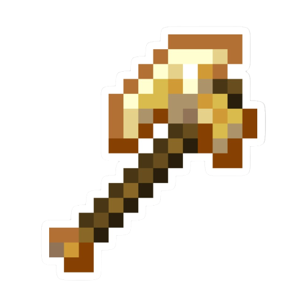

História do Twilight Forest
Provavelmente você sabe que o mod Twilight Forest, foi feito para implementar o jogo Minecraft e é um dos mais conhecidos pela comunidade em todo o mundo. Mas talvez você não saiba tudo sobre esse mod, e esteja aqui para descobrir mais sobre ele. Pois acompanhe esse artigo para aprender muita coisa sobre esse incrível mod.
O Básico
A primeira coisa que temos que fazer após instalar o mod em nosso jogo, é fazer o portal para a nova dimensão que com ele veio, no caso a Twilight Forest, alias, caso queira baixar o mod clique aqui Twilight Forest. Após adentrar o portal, o jogador vai parar em uma dimensão completamente diferente da normal, com itens, mobs, minérios, armaduras, espadas e principalmente bosses. O objetivo aqui é explorar 100% do que esse mod te dispõe.
E é aqui que começa sua aventura em um dos melhores mods já feitos para Minecraft.
Indo mais a Fundo
Após atravessar o portal, você vai para tão esperada dimensão e, nos progressos, é adicionado uma aba do mod, e ela existem espécies de missões, que te ajudarão a descobrir o que você deve fazer e como. Caso tenha dúvidas mais específicas entre nesse site: Guia, que nele está tudo que você precisa saber sobre os itens, porém está tudo em inglês.
A ideia principal dos progressos é te ajudar a explorar o mod da forma mais prática, mas mesmo assim ele não tem explica 100% do que o mod pode te oferecer, mas mesmo assim é de grande ajuda.
Mas agora vamos falar de algo que todos os jogadores de minecraft gostam, armas e armaduras novas e, esse mod nos da tudo isso, tendo cada uma um design e poder diferente. Veja aqui elas:



E claro existem inúmeros outros Itens como arcos e escudos, mas esses são os mais importantes, e acho que isso que temos a falar sobre esse ilustre mod, e claro que ele ainda continua em atualização, então ele sempre trará novas coisas para nos animar e motivar a continuar jogando. Aqui abaixo deixaremos um video de demonstração: